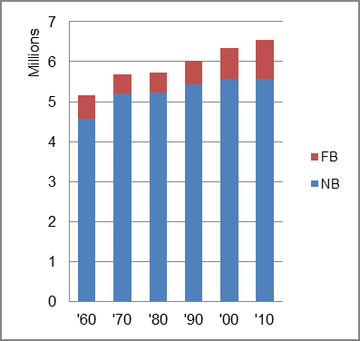

The foreign-born (FB) population increased from 576,452 in 1960 to 983,564 in 2010. That was an increase of 70.6 percent. The foreign-born share changed from 11.2 percent to 15.0 percent.
The share of the overall population that was native-born (NB) increased by 21.7 percent.
Massachusetts: Population 1960-2010 
The first chart below shows the three population change factors for three periods adjusted for annual average amounts. All population increase came from either B-D or NIM as domestic migration was negative. NIM rose over the period from more than one-third of overall population increase to about three-fifths.
The second chart shows the same data but with an adjustment to reflect births to immigrants shifted to NIM. In it, NIM became the principal factor of population increase in all periods.
Massachusetts: Sources of Population Change 1990-2013 Massachusetts: Sources of Population Change (Adjusted) 1990-2013
B-D NDM NIM B-D NDM NIM 90-'99 64.8% neg. 35.2% 90-'99 36.4% neg. 63.6% 00-'09 47.4% neg. 52.6% 00-'09 14.7% neg. 85.3% 10-'13 39.3% neg. 60.7% 10-'13 5.7% neg. 94.3%